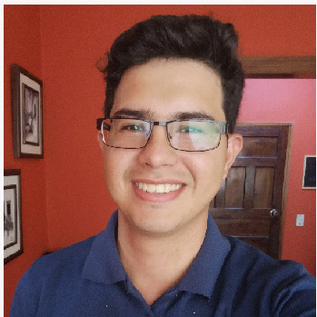

Nuestro equipo
Iris Durón
Propietaria
Desde 1985, me ha encantado tener la oportunidad de servir excelente comida a nuestros maravillosos huéspedes en Las Colinas. Hemos disfrutado de la bendición de hacer nuevos amigos todos los días y atesorar las amistades de los residentes de Irving y Dallas que han sido "habituales" durante años. Este restaurante se ha convertido en "mi vida" y mi alegría. Gracias a todos por el privilegio de organizar sus cenas de negocios, celebraciones de cumpleaños, bodas y noches tranquilas. Nos honra que haya elegido pasar tiempo con nosotros. Siempre trabajaremos para ganarnos ese privilegio.
Francklin Marroquin
Chef ejecutivo
Debido a que crecí en Guanajuato, México, soy íntimamente consciente de las costumbres y gustos culturales en la preparación de algunos de los platos que se encuentran en Via Reál. Hoy, estoy casado y tengo dos hermosos hijos que aman mi cocina. Tengo una profunda pasión por la comida deliciosa. Esto satisface mi deseo de crear una ocasión gastronómica única y agradable que los invitados no olvidarán pronto. Via Reál ha sido un restaurante excepcional, lo que me ha permitido ofrecer esta experiencia a todos y cada uno de los huéspedes.
David Escobar
Gerente general
Vine a este restaurante en 2010 comenzando como mesero y camarero. ¡Estaba claro desde el principio que este era el lugar en el que me veía en los años venideros! ¡He estado en esta industria durante aproximadamente 15 años y cada día siempre es diferente al anterior, lo que lo hace emocionante y desafiante al mismo tiempo! Via Reál ha creado un gran ambiente no solo para cenar, sino también para trabajar. Tenemos un estándar aquí para hacer que las personas se sientan como huéspedes en nuestra casa y hacer que vuelvan por más. Es por eso que este se ha convertido en uno de los lugares favoritos en los que mi familia y yo disfrutamos cenando. ¡Mi objetivo es mantener ese estándar y espero verlos pronto aquí en Via Reál!
Cristian Cruz
Gerente

P + O = S Esta fue una fórmula que un querido amigo mío puso en mi vida hace años. La preparación más la oportunidad es igual al éxito. Hasta el día de hoy, sigo este lema. Me ha abierto las puertas a mi familia y a mí de muchas maneras. Haber sido parte de Via Reál durante 5 años ha sido una bendición. A todos mis invitados habituales, amigos y familiares, siempre brindaré mi mejor servicio para mejorar su experiencia gastronómica.
Gustavo Elvir
Gerente
Después de 16 maravillosos años con Bob's Steak and Chophouse, estoy feliz de haberme unido a mi esposa, Chef Jesus, y al increíble equipo aquí en Via Real. Nuestra visión está unida para hacer que la experiencia de cada huésped sea memorable a través de nuestra deliciosa comida, un servicio atento y un ambiente acogedor. Se dice que los recuerdos más preciados se hacen alrededor de la mesa. Que ese sea siempre tu caso aquí en Via Real, donde te damos la bienvenida con los brazos abiertos.